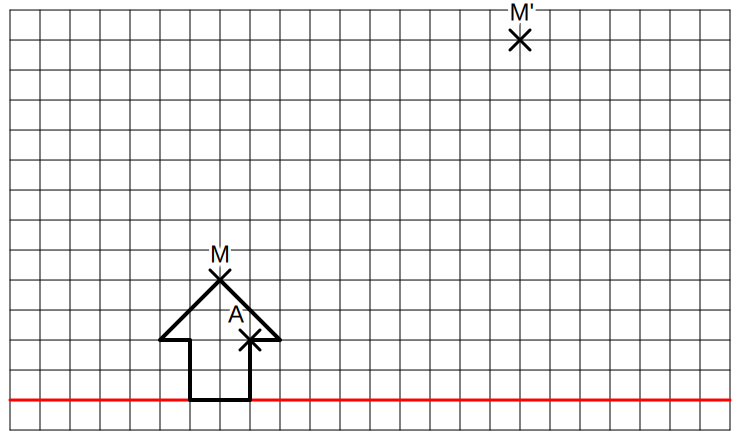
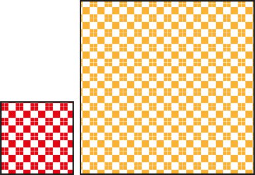
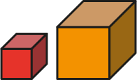

Homothétie de rapport k = 2 d'après le centre O.
Homothétie de rapport k = -2 d'après le centre O.
| Chapitre 2 | - Homothéties |
Activité Introduction

Exemples :
|
|
|
|
Homothétie de rapport k = 2 d'après le centre O. |
Homothétie de rapport k = -2 d'après le centre O. |
Remarque :

|

|
|
Construction de l'image du point M par rapport à O d'un rapport k = 4. |
Construction de l'image du point M par rapport à O d'un rapport k = -2. |
Remarque :
La valeur absolue du rapport correspond au rapport des longueurs $\frac{OM'}{OM}$
$|k| = \frac{Longueur\ d'arrivée}{Longueur\ de\ départ}$
| Cas des aires | Cas des solides |
|---|---|
|  |  |
|
Lors d'une homothétie, l'aires $k^2$ |
Lors d'une homothétie, le volume $k^3$ |